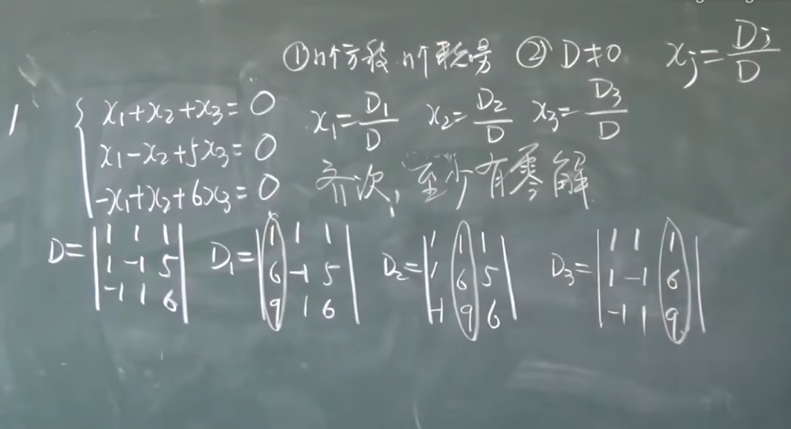

线性代数基本教程（2）
线性代数（2）
按行展开的行列式
首先介绍余子式：
余子式
什么叫余子式呢？就是针对一个元素去掉他所在的行它所在的列，剩下的行列式叫做余子式：如对下面的行列式去掉第三行第二列：
产生的余子式$M_{32}$是：
派生的概念是代数余子式就是：$A_{ij}$是$(-1)^{i+j}M_{ij}$
于是
行列式的按行或列展开
定理：定义任意的行列式可以如下的计算
或者：
如：
异乘变零定理
某行元素与另一行元素的代数余子式为0
拉普拉斯K阶子式
对行列式去掉K行K列的式子还是余子式，去掉的部分叫K阶子式。（可以不做了解，应为后面学矩阵了秒懂）
行列式的乘法
对于行列式的乘法：跟矩阵一致，我们是
当然是同阶的
行列式计算技巧
尽量制造行和便于提取：如对于
讲所有的列依次加到第一列，提取(x+(n-1)a)得到
可以适当加边，便于计算
对于：
可以：
这是因为代数余子式计算中只有第一行有效，展开后还是原来的样子，所以：第一行乘上-1加到其他行得到：
对于这样的行列式，叫三叉形行列式：我们是：依次从列，消掉第一列（第二列乘上$\frac{1}{a_1}$加到第一列…依次类推），得到
范德蒙德行列式
特殊定义这个行列式
这个值是
说白了就是，假设这是一个五阶行列式：
怎么来的？首先第一行乘上$-x_1$在这个基础上接着再做，行列式变成
然后第一列第一行就可以消去了
好好看每一个列，发现都有因子$(x_i-x_1)$提出来：
又出现了！又可以重复做！
反对称行列式
对于这样的行列式
1)主对角线全是0
2）上下位置对应成相反数
于是，奇数阶：$D=0$
对称行列式
1）主对角线无所谓2）上下元素对应相等
这样的行列式叫做对称行列式
Crammer法则
方程组的系数行列式即是行列式的每个元素由系数组成。
对于$x_j$,当$D\neq 0$,
其中，$D_j$是等号右边的列替换第J列产生的新行列式
